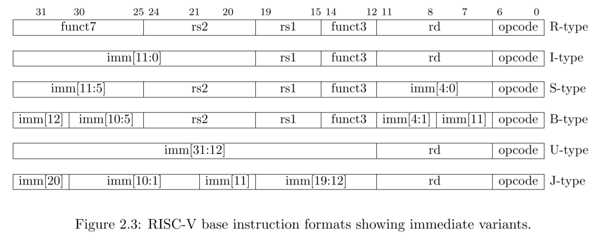

RV64I: Base Integer Instruction Set¶
指令基本格式：32位，4字节。
通用寄存器（GPR）：32个，每个可以容纳64位数据。
访存：最多8字节。
6种基本指令格式¶
- R型指令: 用于寄存器-寄存器操作
- U型指令: 用于长立即数
- I型指令: 用于短立即数和访存load操作
- S型指令: 用于访存store操作
- B型指令: 用于条件跳转操作
- J型指令: 用于无条件跳转
如下图所示1： 
S和B型指令的区别在于： 1. B型指令的12-bit立即数用于表示跳转偏移量的2倍，故是从imm[1]开始表示。 2. S型指令按照指令位顺序表示立即数，而B型指令有一位翻转，即imm[11]。
U和J型指令的区别在于： 1. U型指令的imm-bit左移12位构成其立即数，J型指令的imm-bit左移1位构成其立即数。 2. J型指令存在多位翻转。
如果你使用Verilog语言，你可以使用以下代码得到RV64指令的立即数和funct：
input wire [31:0] instr;
wire [63:0] imm_itype = {{52{instr[31]}},instr[31:20]};
wire [63:0] imm_stype = {{52{instr[31]}},instr[31:25],instr[11:7]};
wire [63:0] imm_btype = {{51{instr[31]}},instr[31],instr[7],instr[30:25],instr[11:8],1'b0};
wire [63:0] imm_utype = {{32{instr[31]}},instr[31:12],12'd0};
wire [63:0] imm_jtype = {{43{instr[31]}},instr[31],instr[19:12],instr[20],instr[30:21],1'b0};
wire [4:0] rs2 = instr[24:20];
wire [4:0] rs1 = instr[19:15];
wire [4:0] rd = instr[11:7 ];
wire [6:0] opcode = instr[6:0];
wire [2:0] funct3 = instr[14:12];
wire [6:0] funct7 = instr[31:25];
wire [4:0] funct5 = instr[31:27]; // only used in amo
推荐阅读¶
The RISC-V Instruction Set Manual Volume I: Unprivileged ISA Chapter 24
指令概览¶
RISC-V指令使用低6位表示OPCODE，指令可分为以下几类：
Warning
这里所述的指令种类与前文所述的指令类型意思不同。这里按照OPCODE进行分类。
typedef enum logic [6:0] {
OPCODE_LUI = 7'b0110111,
OPCODE_AUIPC = 7'b0010111,
OPCODE_JAL = 7'b1101111, // 需要异常处理
OPCODE_JALR = 7'b1100111, // 需要异常处理
OPCODE_BRANCH = 7'b1100011, // 需要异常处理
OPCODE_LOAD = 7'b0000011, // 需要异常处理
OPCODE_STORE = 7'b0100011, // 需要异常处理
OPCODE_OPIMM = 7'b0010011,
OPCODE_OPIMM32 = 7'b0011011,
OPCODE_OP = 7'b0110011,
OPCODE_OP32 = 7'b0111011,
OPCODE_FENCE = 7'b0001111,
OPCODE_SYSTEM = 7'b1110011, // 需要异常处理，没有CSR时可全部实现为空操作
} rv64i_opcode;
注：异常处理涉及跳转PC非对齐、访存非对齐、访存总线异常等情况，需要同学们在设计处理器时考虑实现。在初期阶段实现CSR之前，异常处理可暂时不检查。
OPCODE_LUI¶
该类指令中只有一条指令，格式如下：
+----------------+---------+-------+
| imm[31:12] | rd[4:0] |0110111| LUI
+----------------+---------+-------+
31 12 11 7 6 0
将立即数 符号 扩展后，存入rd寄存器，[11:0]部分填0。
伪代码：
wire [63:0] imm_utype = {{32{instr[31]}},instr[31:12],12'd0};
GPR[rd] <= imm_utype;
OPCODE_AUIPC¶
+----------------+---------+-------+
| imm[31:12] | rd[5:0] |0010111| AUIPC
+----------------+---------+-------+
31 12 11 7 6 0
将立即数 符号 扩展后，加上PC，存入rd寄存器，[11:0]部分填0。
伪代码：
wire [63:0] imm_utype = {{32{instr[31]}},instr[31:12],12'd0};
GPR[rd] <= imm_utype + pc;
OPCODE_JAL¶
+---------------------------+---------+-------+
| imm[20|10:1|11|19:12] | rd[5:0] |1101111|
+---------------------------+---------+-------+
31 12 11 7 6 0
将立即数 符号 扩展后，最低位填0，加上PC，进行跳转。跳转同时将rd寄存器写入当前PC+4。
伪代码：
wire [63:0] imm_jtype = {{43{instr[31]}},instr[31],instr[19:12],instr[20],instr[30:21],1'b0};
GPR[rd] <= pc + 4;
pc <= pc + imm_jtype;
异常：
1. 如果imm[1]为1，导致跳转后PC没有4字节对齐，则在 JAL指令本身 产生Instruction address misaligned异常。（仅限于没有实现RVC的情况）
OPCODE_JALR¶
+---------------+----------+---+---------+-------+
| imm[11:0] | rs1[4:0] |000| rd[4:0] |1100111|
+---------------+----------+---+---------+-------+
31 20 19 15 11 7 6 0
将立即数 忽略imm[0] 符号 扩展后，加上GPR[rs1]，进行跳转。跳转同时将rd寄存器写入当前PC+4。
伪代码：
wire [63:0] imm_itype = {{52{instr[31]}},instr[31:20]};
GPR[rd] <= pc + 4;
pc <= imm_itype + GPR[rs1];
异常：
1. 如果最终跳转PC没有对齐4字节（实现了RVC的核为2字节），则在 JALR指令本身 产生Instruction address misaligned异常。
Info
为什么忽略最低位可以参考The RISC-V Instruction Set Manual Volume I: Unprivileged ISA Document Version 20191213 Page 21（PDF中的39页）。
OPCODE_BRANCH（6条指令）¶
+--------------+----------+----------+---------+-------------+-------+
| imm[12|10:5] | rs2[4:0] | rs1[4:0] |BRANCH_OP| imm[4:1|11] |1100011| Branch（根据BRANCH_OP取值不同含6条指令）
+--------------+----------+----------+---------+-------------+-------+
31 25 24 20 19 15 14 12 11 7 6 0
其中，BRANCH_OP取值和对应行为如下（不写$signed时默认unsigned）：
typedef enum logic [2:0] {
FUNCT3_BEQ = 3'b000, // 当GPR[rs1] == GPR[rs2]时，跳转
FUNCT3_BNE = 3'b001, // 当GPR[rs1] != GPR[rs2]时，跳转
FUNCT3_BLT = 3'b100, // 当$signed(GPR[rs1]) < $signed(GPR[rs2])时，跳转
FUNCT3_BGE = 3'b101, // 当$signed(GPR[rs1]) >= $signed(GPR[rs2])时，跳转
FUNCT3_BLTU = 3'b110, // 当GPR[rs1] < GPR[rs2]时，跳转
FUNCT3_BGEU = 3'b111 // 当GPR[rs1] >= GPR[rs2]时，跳转
} funct3_branch;
伪代码：
- 判断部分
logic branch_taken; always_comb case(funct3) FUNCT3_BEQ: branch_taken = GPR[rs1] == GPR[rs2] ; FUNCT3_BNE: branch_taken = GPR[rs1] != GPR[rs2] ; FUNCT3_BLT: branch_taken = $signed(GPR[rs1]) < $signed(GPR[rs2]); FUNCT3_BGE: branch_taken = $signed(GPR[rs1]) >= $signed(GPR[rs2]); FUNCT3_BLTU: branch_taken = GPR[rs1] < GPR[rs2] ; FUNCT3_BGEU: branch_taken = GPR[rs1] >= GPR[rs2] ; default: branch_taken = 0; endcase end - 处理器行为：
wire [63:0] imm_btype = {{51{instr[31]}},instr[31],instr[7],instr[30:25],instr[11:8],1'b0}; if (branch_taken) pc <= pc + imm_btype; end
异常：
1. 如果最终跳转PC没有对齐4字节（实现了RVC的核为2字节），则在 Branch指令本身 产生Instruction address misaligned异常。
Warning
Branch与JAL/JALR不同的是，Branch指令没有提交当前PC到寄存器。
OPCODE_OPIMM（9条指令）¶
指令类型：立即数运算指令
该OPCODE下，指令如下：
31 20
+-------------------+----------+-----+---------+-------+
| imm[11:0] | rs1[4:0] | 000 | rd[4:0] |0010011| ADDI
+-------------------+----------+-----+---------+-------+
| imm[11:0] | rs1[4:0] | 010 | rd[4:0] |0010011| SLTI
+-------------------+----------+-----+---------+-------+
| imm[11:0] | rs1[4:0] | 011 | rd[4:0] |0010011| SLTIU
+-------------------+----------+-----+---------+-------+
| imm[11:0] | rs1[4:0] | 100 | rd[4:0] |0010011| XORI
+-------------------+----------+-----+---------+-------+
| imm[11:0] | rs1[4:0] | 110 | rd[4:0] |0010011| ORI
+-------------------+----------+-----+---------+-------+
| imm[11:0] | rs1[4:0] | 111 | rd[4:0] |0010011| ANDI
+------+------------+----------+-----+---------+-------+
|000000| shamt[5:0] | rs1[4:0] | 001 | rd[4:0] |0010011| SLLI
+------+------------+----------+-----+---------+-------+
|000000| shamt[5:0] | rs1[4:0] | 101 | rd[4:0] |0010011| SRLI
+------+------------+----------+-----+---------+-------+
|010000| shamt[5:0] | rs1[4:0] | 101 | rd[4:0] |0010011| SRAI
+------+------------+----------+-----+---------+-------+
31 26 25 20 19 15 14 12 11 7 6 0
伪代码：
wire [63:0] imm_itype = {{52{instr[31]}},instr[31:20]};
wire [5:0] shamt = instr[25:20];
case(funct3)
000: GPR[rd] <= GPR[rs1] + imm_itype; // ADDI
010: GPR[rd] <= {63'd0,$signed(GPR[rs1]) < $signed(imm_itype)}; // SLTI
011: GPR[rd] <= {63'd0, GPR[rs1] < imm_itype}; // SLTIU
100: GPR[rd] <= GPR[rs1] ^ imm_itype}; // XORI
110: GPR[rd] <= GPR[rs1] | imm_itype}; // ORI
111: GPR[rd] <= GPR[rs1] & imm_itype}; // ANDI
001: GPR[rd] <= GPR[rs1] << shamt; // SLLI
101: GPR[rd] <= (
instr[30] ? ($signed(GPR[rs1]) >>> shamt) : // SRAI
( GPR[rs1] >> shamt) // SRLI
);
endcase
OPCODE_OPIMM-32（4条指令）¶
指令类型：立即数 32位 运算指令。
该OPCODE下，指令如下：
31 20
+--------------------+----------+-----+---------+-------+
| imm[11:0] | rs1[4:0] | 000 | rd[4:0] |0011011| ADDIW
+-------+------------+----------+-----+---------+-------+
|0000000| shamt[4:0] | rs1[4:0] | 001 | rd[4:0] |0011011| SLLIW
+-------+------------+----------+-----+---------+-------+
|0000000| shamt[4:0] | rs1[4:0] | 101 | rd[4:0] |0011011| SRLIW
+-------+------------+----------+-----+---------+-------+
|0100000| shamt[4:0] | rs1[4:0] | 101 | rd[4:0] |0011011| SRAIW
+-------+------------+----------+-----+---------+-------+
31 25 24 20 19 15 14 12 11 7 6 0
伪代码：
wire [31:0] imm_itype_32 = {{20{instr[31]}},instr[31:20]};
wire [4:0] shamt_32 = instr[24:20];
wire [31:0] rs1_32 = GPR[rs1][31:0]
wire [31:0] GPR_rd_32;
case(funct3)
000: GPR_rd_32 = rs1_32 + imm_itype_32; // ADDIW
001: GPR_rd_32 = rs1_32 << shamt_32; // SLLIW
101: GPR_rd_32 = (
instr[30] ? ($signed(rs1_32) >>> shamt_32) : // SRAIW
( rs1_32 >> shamt_32) // SRLIW
);
endcase
OPCODE_OP（10条指令）¶
指令类型：寄存器运算指令。
该OPCODE下，指令如下：
+-------+----------+----------+-----+---------+-------+
|0000000| rs2[4:0] | rs1[4:0] | 000 | rd[4:0] |0110011| ADD
+-------+----------+----------+-----+---------+-------+
|0100000| rs2[4:0] | rs1[4:0] | 000 | rd[4:0] |0110011| SUB
+-------+----------+----------+-----+---------+-------+
|0000000| rs2[4:0] | rs1[4:0] | 001 | rd[4:0] |0110011| SLL
+-------+----------+----------+-----+---------+-------+
|0000000| rs2[4:0] | rs1[4:0] | 010 | rd[4:0] |0110011| SLT
+-------+----------+----------+-----+---------+-------+
|0000000| rs2[4:0] | rs1[4:0] | 011 | rd[4:0] |0110011| SLTU
+-------+----------+----------+-----+---------+-------+
|0000000| rs2[4:0] | rs1[4:0] | 100 | rd[4:0] |0110011| XOR
+-------+----------+----------+-----+---------+-------+
|0000000| rs2[4:0] | rs1[4:0] | 101 | rd[4:0] |0110011| SRL
+-------+----------+----------+-----+---------+-------+
|0100000| rs2[4:0] | rs1[4:0] | 101 | rd[4:0] |0110011| SRA
+-------+----------+----------+-----+---------+-------+
|0100000| rs2[4:0] | rs1[4:0] | 110 | rd[4:0] |0110011| OR
+-------+----------+----------+-----+---------+-------+
|0100000| rs2[4:0] | rs1[4:0] | 111 | rd[4:0] |0110011| AND
+-------+----------+----------+-----+---------+-------+
31 25 24 20 19 15 14 12 11 7 6 0
注：后续增加乘除法指令时，会共享该OPCODE，通过funct7区分。
伪代码：
case(funct3)
000: GPR[rd] <= (
instr[30] ? (GPR[rs1] - GPR[rs2]) : // SUB
(GPR[rs1] + GPR[rs2]) // ADD
);
001: GPR[rd] <= GPR[rs1] << GPR[rs2][5:0]; // SLL
010: GPR[rd] <= {63'd0,$signed(GPR[rs1]) < $signed(GPR[rs2])}; // SLT
011: GPR[rd] <= {63'd0, GPR[rs1] < GPR[rs2]}; // SLTU
100: GPR[rd] <= GPR[rs1] ^ GPR[rs2]}; // XOR
101: GPR[rd] <= (
instr[30] ? ($signed(GPR[rs1]) >>> GPR[rs2][5:0]) : // SRA
( GPR[rs1] >> GPR[rs2][5:0]) // SRL
);
110: GPR[rd] <= GPR[rs1] | GPR[rs2]}; // OR
111: GPR[rd] <= GPR[rs1] & GPR[rs2]}; // AND
endcase
OPCODE_OP-32（5条指令）¶
指令类型：寄存器 32位 运算指令。
该OPCODE下，指令如下：
+-------+----------+----------+-----+---------+-------+
|0000000| rs2[4:0] | rs1[4:0] | 000 | rd[4:0] |0111011| ADDW
+-------+----------+----------+-----+---------+-------+
|0100000| rs2[4:0] | rs1[4:0] | 000 | rd[4:0] |0111011| SUBW
+-------+----------+----------+-----+---------+-------+
|0000000| rs2[4:0] | rs1[4:0] | 001 | rd[4:0] |0111011| SLLW
+-------+----------+----------+-----+---------+-------+
|0000000| rs2[4:0] | rs1[4:0] | 101 | rd[4:0] |0111011| SRLW
+-------+----------+----------+-----+---------+-------+
|0100000| rs2[4:0] | rs1[4:0] | 101 | rd[4:0] |0111011| SRAW
+-------+----------+----------+-----+---------+-------+
31 25 24 20 19 15 14 12 11 7 6 0
注：后续增加乘除法指令时，会共享该OPCODE，通过funct7区分。
伪代码：
wire [31:0] rs1_32 = GPR[rs1][31:0]
wire [31:0] rs2_32 = GPR[rs1][31:0]
wire [4:0] shamt_32 = GPR[rs2][4:0];
wire [31:0] GPR_rd_32;
case(funct3)
000: GPR_rd_32 = (
instr[30] ? rs1_32 - rs2_32 : // SUBW
rs1_32 + rs2_32; // ADDW
);
001: GPR_rd_32 = rs1_32 << shamt_32; // SLLW
101: GPR_rd_32 = (
instr[30] ? ($signed(rs1_32) >>> shamt_32) :// SRAW
( rs1_32 >> shamt_32) // SRLW
);
endcase
OPCODE_LOAD（7条指令）¶
指令类型：内存读指令。
该OPCODE下，指令如下：
+-------------------+----------+-----+---------+-------+
| imm[11:0] | rs1[4:0] | 000 | rd[4:0] |0000011| LB
+-------------------+----------+-----+---------+-------+
| imm[11:0] | rs1[4:0] | 100 | rd[4:0] |0000011| LBU
+-------------------+----------+-----+---------+-------+
| imm[11:0] | rs1[4:0] | 001 | rd[4:0] |0000011| LH
+-------------------+----------+-----+---------+-------+
| imm[11:0] | rs1[4:0] | 101 | rd[4:0] |0000011| LHU
+-------------------+----------+-----+---------+-------+
| imm[11:0] | rs1[4:0] | 010 | rd[4:0] |0000011| LW
+-------------------+----------+-----+---------+-------+
| imm[11:0] | rs1[4:0] | 110 | rd[4:0] |0000011| LWU
+-------------------+----------+-----+---------+-------+
| imm[11:0] | rs1[4:0] | 011 | rd[4:0] |0000011| LD
+-------------------+----------+-----+---------+-------+
31 20 19 15 14 12 11 7 6 0
处理器行为：
-
使用
GPR[rs1]+ 有符号 扩展imm得到访存地址，从该地址读取一定宽度的数据。 -
其中，B表示1字节，H表示2字节，W表示4字节，D表示8字节，访存宽度以这个决定。
-
在符号扩展上，U后缀指令高位填0，不带U后缀指令则按Load大小的最高位进行符号扩展（例如LB就在取得数据的第7位符号扩展）。
异常处理：
-
如果CPU不支持非对齐访存（建议做不支持的CPU，以降低Cache设计难度），在
访存地址 % 访存宽度 ！= 0时，产生Load address misaligned异常，交给操作系统/SBI完成非对齐访存拆分。 -
如果总线支持总线错误（例如AXI总线上出现rresp不为OKEY），则产生
Load access fault异常。（不实现的同学可以自己魔改riscv-tests，这部分不做要求）
-
如果支持PMP、MMU、Hypervisor，则还可能产生
Load page fault、Load guest-page fault，或因PMP产生Load access fault，这部分请自行阅读手册。
OPCODE_STORE（4条指令）¶
指令类型：内存写指令。
该OPCODE下，指令如下：
+-----------+----------+----------+-----+----------+-------+
| imm[11:5] | rs2[4:0] | rs1[4:0] | 000 | imm[4:0] |0100011| SB
+-----------+----------+----------+-----+----------+-------+
| imm[11:5] | rs2[4:0] | rs1[4:0] | 001 | imm[4:0] |0100011| SH
+-----------+----------+----------+-----+----------+-------+
| imm[11:5] | rs2[4:0] | rs1[4:0] | 010 | imm[4:0] |0100011| SW
+-----------+----------+----------+-----+----------+-------+
| imm[11:5] | rs2[4:0] | rs1[4:0] | 011 | imm[4:0] |0100011| SD
+-----------+----------+----------+-----+----------+-------+
31 25 24 20 19 15 14 12 11 7 6 0
处理器行为：
-
使用
GPR[rs1]+ 有符号 扩展imm得到访存地址，向该地址存储GPR[rs2]从低位开始一定宽度的部分。 -
其中，B表示1字节，H表示2字节，W表示4字节，D表示8字节，存储宽度以这个决定。
异常处理：
-
如果CPU不支持非对齐访存（建议做不支持的CPU，以降低Cache设计难度），在
访存地址 % 访存宽度 ！= 0时，产生Store/AMO address misaligned异常，交给操作系统/SBI完成非对齐访存拆分。 -
如果总线支持总线错误（例如AXI总线上出现bresp不为OKEY），则产生
Store access fault异常。（不实现的同学可以自己魔改riscv-tests，这部分不做要求）
-
如果支持PMP、MMU、Hypervisor，则还可能产生
Store/AMO page fault、Store/AMO guest-page fault，或因PMP产生Store access fault，这部分请自行阅读手册。
OPCODE_FENCE（1条指令）¶
指令类型：内存屏障指令。
对于五级流水不带Cache的核，可以在译码阶段遇到该OPCODE直接实现为NOP。
注：后续实现Cache后，实现的Zifence.i与该指令共享OPCODE，这一部分将在Cache具体介绍。
OPCODE_SYSTEM（2条指令）¶
RV64I定义了以下两条指令：
-
ECALL
-
EBREAK
对于还未实现CSR的核，可以在译码阶段遇到该OPCODE直接实现为NOP。
实现建议¶
由于RISC-V相同OPCODE的指令集功能十分类似，推荐在Verilog语言中使用case语句按照OPCODE区分指令，完成译码器编写。
常见问题¶
-
如果对于某一种指令，其funct部分未用全，出现OPCODE有效而指令无效怎么办，是否一定要产生异常？
尽管这么做不符合规定，但RISC-V Tests不包含这一部分的测试，因此对于简单实现可以考虑不检查。但对于FUNCT_SYSTEM强烈建议进行严格检查。
-
对于带立即数的移位指令，其funct部分如果其他位出现了1，是否一定要产生异常？
尽管这么做不符合规定，但RISC-V Tests不包含这一部分的测试，因此对于简单实现可以考虑不检查。
异常处理相比MIPS的区别：¶
- RISC-V没有运算指令异常，MIPS有Overflow异常。
- MIPS所有的分支/跳转指令异常发生在分支/跳转之后取指时产生，RISC-V对于取指非对齐异常必须产生在分支/跳转指令本身。（即写入CSR的mepc寄存器是Branch/Jump本身的地址）
- RISC-V当支持压缩指令扩展时，PC允许对齐2字节而不是4字节，此时跳转指令的取指非对齐异常检查需要相应发生变化。
容易犯错的点¶
- 32位操作与64位操作将导致不同的行为，建议将操作是32位还是64位传入ALU进行判断，在输入输出都进行32位符号扩展并不等价（例如移位指令的位数，后续的M扩展的乘法指令等）。
- 对于移位shamt来源寄存器而非立即数的移位指令，其shamt部分对于64位和32位分别是6位和5位。
- JALR指令记得忽略立即数的最低位
- Branch不将PC+4写入
GPR[rd]，只有JAL与JALR这么做。